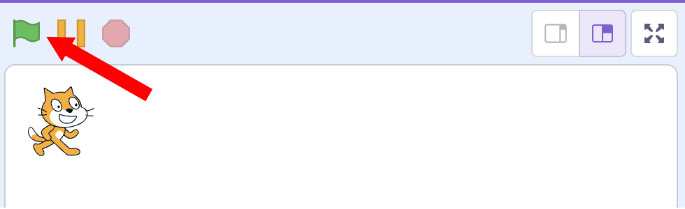
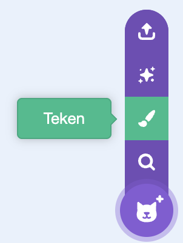

Kat Race Voorkennis
Deze opdracht is gemaakt voor beginners Leerdoelen
Introductie In deze opdracht ga je een spel maken die als doel heeft de kat zo snel mogelijk naar de overkant te laten lopen.
Ga naar de
Als het spelletje start ( Wanneer groene vlag wordt aangeklikt maak x (-200) Uitleg x-as X wijst de plek van links naar recht op het scherm.
We willen de kat iedere keer een stukje naar voren laten bewegen als we op de spatiebalk drukken, dit kunnen we met de volgende extra codeblokken.
Voeg de blokken die hiernaast staat aangewezen toe aan de code
van wanneer groene vlag wordt aangeklikt maak x (-200) wanneer [spatiebalk v] is ingedrukt // ++++++ neem (10) stappen // ++++++
Probeer het uit:
Snap je hoe het werkt? 
Een gebeurtenis is iets dat door de computer wordt herkend en waarmee je een blok in je programma kan starten.
De acties onder dit blok worden uitgevoerd als op
De acties onder dit blok worden uitgevoerd als op de Er zijn nog meer gebeurtenissen die je kan gebruiken. Deze vindt je bij gebeurtenissen zoals je in het plaatje hiernaast kunt zien.
Om te voorkomen dat je makkelijk aan de overkant komt, willen we wachten nadat de spatiebalk is ingedrukt, dat hij eerst weer is los gelaten.
Pas de code van wanneer [spatiebalk v] is ingedrukt neem (10) stappen wacht tot <niet <toets (spatiebalk v) ingedrukt>> // ++++++ Tip Kijk goed naar de kleuren! Je moet de blokken in elkaar schuiven!
Maak een nieuwe Sprite (plaatje) aan en teken hier een finishlijn in. 
Als de kat nu bij de finish lijn komt moet ons spel stoppen. Dit kan je met de volgende code blokken doen.
Voeg de codeblokken toe aan Dit zorgt ervoor dat wanneer [spatiebalk v] is ingedrukt neem (10) stappen wacht tot <niet <toets (spatiebalk v) ingedrukt>> als <raak ik (sprite2 v) ?> dan // ++++++ zeg [ik ben er!!!] (2) sec. // ++++++ stop [alle v] // ++++++ end uitleg variabelen Met variabelen kan je je programma vertellen om dingen te onthouden. Een variabele is een plekje in het geheugen van de computer waarin je een waarde kan bewaren. Bijvoorbeeld de score of de uitkomst van een som. Maken van een variabele
Om een variabele te kunnen gebruiken, moet je hem eerst maken. Dit doe je door op maak variabele te klikken.
Je krijgt nu een formulier waarin je de variabele een naam kan geven. In dit
voorbeeld
Gebruiken van een variabele Je krijgt nu een nieuwe bouwsteen die je kan gebruiken in je programma.
Dit is een Race! dus moeten we de tijd bij gaan houden hoelang
We hebben hiervoor een variabele nodig met de naam
Maak nu zelf een variabele met de naam tijd.
Nu moeten we er eerst voor zorgen dat de tijd op nul wordt gezet als je het programma start. wanneer groene vlag wordt aangeklikt maak x (-200) maak [tijd v] (0) // +++++
Zorg er nu voor dat de variable wanneer groene vlag wordt aangeklikt maak x (-200) maak [tijd v] (0) herhaal // +++++ wacht (1) sec. // +++++ verander [tijd v] met (1) // +++++ end
We gaan er nu voor zorgen dat je de score ziet als De tijd meten in hele seconden is misschien niet zo leuk. Laten we de tijd in 1/10 van een seconde gaan meten. We willen dus de variabele tijd niet 1x per seconde verhogen, maar 10x per seconde. Pas de code aan zoals hiernaast is weergegeven. wanneer groene vlag wordt aangeklikt maak x (-200) maak [tijd v] (0) herhaal wacht (0.1) sec. // < aanpassen verander [tijd v] met (1) end
Als wanneer [spatiebalk v] is ingedrukt neem (10) stappen wacht tot <niet <toets (spatiebalk v) ingedrukt>> als <raak ik (sprite2 v) ?> dan zeg (voeg [mijn tijd is] en (tijd) samen) (2) sec. // < aanpassen stop [alle v] end
Laten we het wat moeilijker maken en een hindernis op de weg van de kat zetten.
Dit kan je doen door Kies een sprite. Kies een leuk plaatje uit en maak het plaatje ook weer wat kleiner, bijvoorbeeld weer grootte 50
Nu moeten we ervoor zorgen dat als wanneer [spatiebalk v] is ingedrukt neem (10) stappen wacht tot <niet <toets (spatiebalk v) ingedrukt>> als <raak ik (sprite2 v) ?> dan zeg (voeg [mijn tijd is] en (tijd) samen) (2) sec. stop [alle v] end als <raak ik (bananas v)?> dan //+++++ maak x (200) //+++++ end Uitleg y-as
Nu moeten we het wel mogelijk maken voor de kat om de hindernis te ontwijken. Dit kunnen we doen door de kat omhoog en omlaag te laten gaan. Gebruik pijltje omhoog om de kat om hoog te laten gaan. De Y Positie van de kat bepaald hoe hoog de kat staat.
Maak de blokken hiernaast wanneer [pijltje omhoog v] is ingedrukt // +++++ verander y met (10) // +++++
Maak zelf een blok om de kat omlaag te laten bewegen als op pijltje omlaag wordt gedrukt.
Als het spel begint moet
Voeg het blok dat hiernaast staat toe aan je programma. Je moet zelf bepalen waar hij moet komen. maak y (0)
Speel het spel en kijk of alles werkt. Extra hindernissen
Zorg er voor dat als de kat tegen de hindernissen aanloopt hij altijd weer terug links word geplaatst! Langzamer lopen
Laat de kat langzamer lopen, dus dat je nog veel vaker op de spatiebalk moet drukken om bij de finish te komen.
Twee spelers Kan je dit een 2-speler spel maken?
Maak naast de kat een andere speler in je spel. Kopieer de code van de kat naar de andere speler.
Verander de toetsen voor de spelers
Als de 2 spelers elkaar aanraken, zet dan beide spelers terug aan het begin! 
[NL] Licentie Informatie Voor al het materiaal in document geldt de licentie: Creative Commons Naamsvermelding-NietCommercieel-GelijkDelen 3.0 https://creativecommons.org/licenses/by-nc-sa/3.0/. Indien u toegang wilt tot de raw bewerkbare files om het materiaal naar uw eigen doel aan te passen, ons te helpen het materiaal te verbeteren, of het materiaal te vertalen, neem dan contact met CoderDojo Zoetermeer https://codeclub.org/en/clubs/4f8d36fb-7545-4ba9-b9fb-b379b6b87938 [EN] License Information All work in this document are licensed under the Creative Commons Attribution-NonCommercial-ShareAlike 3.0 https://creativecommons.org/licenses/by-nc-sa/3.0/. If you wish to gain access to the raw editable files in order to adapt our content to your own purposes, help us improve the content, or translate it, then please contact CoderDojo Zoetermeer https://codeclub.org/en/clubs/4f8d36fb-7545-4ba9-b9fb-b379b6b87938 .
This document was created by CoderDojo Zoetermeer. The
template design was inspired by the CoderDojo branding and
visual identity, and incorporates elements from both
organizations. We would like to thank CoderDojo Nederland
for their their ongoing support of the CoderDojo
community.
Acknowledgements
Author(s): CoderDojo Zoetermeer |
 begin van de opdracht
begin van de opdracht

 Uitleg gebeurtenissen
Uitleg gebeurtenissen


 Y wijst de plek van boven naar beneden op het scherm.
Y wijst de plek van boven naar beneden op het scherm. Maak meerdere hindernissen door rotsen toe te voegen.
Maak meerdere hindernissen door rotsen toe te voegen.